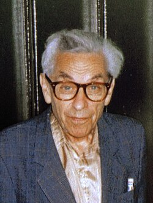
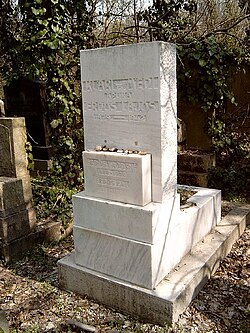

Paul Erdős | |
|---|---|
 Erdős in 1992 | |
| Born | Erdős Pál 26 March 1913 |
| Died | 20 September 1996 (aged 83) Warsaw, Poland |
| Citizenship | Hungary |
| Education | Royal Hungarian Pázmány Péter University |
| Known for |
|
| Awards |
|
| Scientific career | |
| Fields | Mathematics |
| Institutions | |
| Lipót Fejér | |
Doctoral students | |
.jpg){kind=link}
Paul Erdős (Hungarian: Erdős Pál [ˈɛrdøːʃ ˈpaːl]; 26 March 1913 – 20 September 1996) was a Hungarian mathematician. He was one of the most prolific mathematicians and producers of mathematical conjectures of the 20th century. Erdős pursued and proposed problems in discrete mathematics, graph theory, number theory, mathematical analysis, approximation theory, set theory, and probability theory. Much of his work centered on discrete mathematics, cracking many previously unsolved problems in the field. He championed and contributed to Ramsey theory, which studies the conditions in which order necessarily appears. Overall, his work leaned towards solving previously open problems, rather than developing or exploring new areas of mathematics.
He taught at various universities in the United States and Israel. Erdős's output was prolific; he published around 1,500 mathematical papers during his lifetime, many being collaborations with other mathematicians, making him arguably the most prolific mathematician in history.[a] This prompted the creation of the Erdős number, the number of steps in the shortest path between a mathematician and Erdős in terms of co-authorships.
He was known both for his social practice of mathematics, working with more than 500 collaborators, and for his eccentric lifestyle. He firmly believed mathematics to be a social activity, living a nomadic lifestyle with the sole purpose of writing mathematical papers with other mathematicians. He devoted his waking hours to mathematics, even into his later years; he died at a mathematics conference in Warsaw in 1996.
Early life and education
Paul Erdős was born on 26 March 1913, in Budapest, Austria-Hungary,[1] the only surviving child of Anna (née Wilhelm) and Lajos Erdős (né Engländer).[2][3] His two sisters, aged three and five, both died of scarlet fever a few days before he was born.[4] He was born to a well-to-do Hungarian-Jewish family, both of his parents worked as high school mathematics teachers. His fascination with mathematics developed early. He was raised partly by a German governess[5] because his father was held captive in Siberia as an Austro-Hungarian prisoner of war during 1914–1920,[3] causing his mother to have to work long hours to support their household. His father had taught himself English while in captivity but mispronounced many words. When Lajos later taught his son to speak English, Paul learned his father's pronunciation, which he continued to use for the rest of his life.[6]
He taught himself to read through mathematics texts that his parents left around in their home. By the age of five, given a person's age, he could calculate in his head how many seconds they had lived.[5] Due to his sisters' deaths, he had a close relationship with his mother, with the two of them reportedly sharing the same bed until he left for college.[7][8]
When he was 16, his father introduced him to two subjects that would become lifetime favourites—infinite series and set theory. In high school, Erdős became an ardent solver of the problems that appeared each month in KöMaL, the "Mathematical and Physical Journal for Secondary Schools".[9]
Erdős began studying at the University of Budapest when he was 17 after winning a national examination. At the time, admission of Jews to Hungarian universities was severely restricted under the numerus clausus.[6][10]
During 1933, Erdős and several other students, including George Szekeres, Esther Klein (later Szekeres), her lifelong friend Márta Wachsberger (later Svéd), and George Svéd, met frequently, often at the Anonymous statue in City Park,[11] to discuss mathematics. Klein proposed a problem, offering her proof,[12] about which Szekeres and Erdős wrote a paper that generalised the result in 1935.[13] Erdős dubbed the original problem the "Happy ending problem" because it resulted in the marriage of George and Esther Szekeres.[11]
By the time he was 20, Erdős had found a proof for Bertrand's postulate.[10] In 1934, at the age of 21, he was awarded a doctorate in mathematics.[10] Erdős's thesis advisor was Lipót Fejér, who was also the thesis advisor for John von Neumann, George Pólya, and Pál Turán.[6]
Career
In 1934, Erdős took up a post-doctoral fellowship at Victoria University of Manchester in Manchester, England, where he met G. H. Hardy and Stanisław Ulam.[6][14]
Because he was Jewish, Hungary was dangerous, so he left the country, relocating to the United States in 1938.[10] In 1938, he accepted his first American position as a scholarship holder at the Institute for Advanced Study, Princeton, New Jersey, for the next ten years. Despite outstanding papers with Mark Kac and Aurel Wintner on probabilistic number theory, Pál Turán in approximation theory, and Witold Hurewicz on dimension theory, his fellowship was not continued, and Erdős was forced to take positions as a wandering scholar at University of Pennsylvania, Notre Dame, Purdue, Stanford, and Syracuse.[14] He would not stay long in one place, instead traveling among mathematical institutions until his death.
Described by his biographer, Paul Hoffman, as "probably the most eccentric mathematician in the world", Erdős spent most of his adult life living out of a suitcase.[15] Time magazine called him "The Oddball's Oddball".[16] Except for some years in the 1950s, when he was not allowed to enter the United States based on the accusation that he was a Communist sympathizer, his life was a continuous series of going from one meeting or seminar to another.[15] During his visits, Erdős expected his hosts to lodge him, feed him, and do his laundry, along with anything else he needed, as well as arrange for him to get to his next destination.[15]
In 1941, Erdős and two others would be arrested by authorities for looking around a secret radio tower, with Erdős reportedly telling police that rather than noticing the signs against trespassing, "I was thinking about mathematical theorems." The FBI would maintain surveillance and a file on Erdős into the 1970s, but never found anything incriminating.[17]
In 1943, Erdős began a part-time appointment at Purdue University.[18] In the same year, Stanisław Ulam invited Erdős to work on the Manhattan Project in Los Alamos, New Mexico, with him, along with other mathematicians and physicists. However, Erdős expressed a desire to return to Hungary after the war.[6]
Near the end of 1948 Erdős was able to return to Hungary for a visit, where he was reunited with his surviving family and friends. For the next three years he traveled frequently between England and the United States, before accepting a temporary post at the University of Notre Dame, Indiana, in 1952. The post gave him complete freedom to travel to do joint research whenever he wanted, but, despite encouragement from the university and his friends, he would not accept the offer on a permanent basis.[18] Hungary at the time was under the Warsaw Pact with the Soviet Union. Although Hungary limited the freedom of its own citizens to enter and exit the country, in 1956 it gave Erdős the exclusive privilege of being allowed to enter and exit the country as he pleased.
As a result of the Red Scare and McCarthyism,[19][20][21] in 1954, the United States Immigration and Naturalization Service denied Erdős, a Hungarian citizen, a re-entry visa into the United States.[22] The official reasons were the fact that he had corresponded with a Chinese mathematician who had subsequently returned from the United States to China, and also Erdős's 1941 FBI record.[18] He requested reconsideration from the U.S. Immigration Services at periodic intervals during the early 1960s, and visa was finally granted in November 1963. During this period he spent around 10 years in Israel.[18] He was given a position for three months at the Hebrew University of Jerusalem, and then a "permanent visiting professor" position at the Technion in Haifa.[23]
{kind=link}
In 1963, the United States Immigration and Naturalization Service granted Erdős a visa, and he resumed teaching at and traveling to American institutions. Ten years later, in 1973, the 60-year-old Erdős voluntarily left Hungary.[24]
In 1985, he visited two universities in Adelaide, South Australia, Flinders University[25] and the University of Adelaide. At the latter, he met budding mathematician Terence Tao, then 10 years old. Erdős reportedly enjoyed working with children.[26] His trip to Australia was instigated by longtime friend and collaborator, Hungarian mathematician George Szekeres.[27]
Mathematical work
Erdős was one of the most prolific mathematician and producer of mathematical conjectures in history, if not the most.[a][28][29][30] He was compared with Leonard Euler for the sheer quantity of his writings.[31] Erdős wrote around 1,525 mathematical articles in his lifetime[32] – a figure that remained unsurpassed as of 2023[33] – mostly with co-authors. He strongly believed in and practiced mathematics as a social activity,[34][28] having 511 different collaborators in his lifetime.[35]
Most of his work centered on discrete mathematics, graph theory, number theory, mathematical analysis, approximation theory, set theory, and probability theory.[36]
In his mathematical style, Erdős was much more of a "problem solver" than a "theory developer" (see "The Two Cultures of Mathematics"[37] by Timothy Gowers for an in-depth discussion of the two styles, and why problem solvers are perhaps less appreciated). Joel Spencer states that "his place in the 20th-century mathematical pantheon is a matter of some controversy because he resolutely concentrated on particular theorems and conjectures throughout his illustrious career."[38] Erdős never won the Fields Medal (the highest mathematical prize available during his lifetime), nor did he coauthor a paper with anyone who did,[39] a pattern that extends to other prizes.[40] He did win the 1983/84 Wolf Prize, "for his numerous contributions to number theory, combinatorics, probability, set theory and mathematical analysis, and for personally stimulating mathematicians the world over".[41]
Of his contributions, the development of Ramsey theory and the application of the probabilistic method especially stand out. Extremal combinatorics owes to him a whole approach, derived in part from the tradition of analytic number theory. Erdős found a proof for Bertrand's postulate which proved to be far neater than Chebyshev's original one. He also discovered the first elementary proof for the prime number theorem, along with Atle Selberg. However, the circumstances leading up to the proofs, as well as publication disagreements, led to a bitter dispute between Erdős and Selberg.[42][43] Erdős also contributed to fields in which he had little real interest, such as topology, where he is credited as the first person to give an example of a totally disconnected topological space that is not zero-dimensional, the Erdős space.[44]
Erdős's problems

Erdős had a reputation for posing new problems as well as solving existing ones: Ernst Strauss called him "the absolute monarch of problem posers".[45] Throughout his career, Erdős would offer payments for solutions to unresolved problems.[46] These ranged from $25 for problems that he felt were just out of the reach of the current mathematical thinking (both his and others) up to $10,000[47] for problems that were both difficult to attack and mathematically significant. Some of these problems have since been solved, including the most lucrative – Erdős's conjecture on prime gaps was solved in 2014, and the $10,000 paid.[48]
There are thought to be at least a thousand remaining unsolved problems, though there is no official or comprehensive list. The offers remained active despite Erdős's death; Ronald Graham was the (informal) administrator of solutions, and a solver could receive either an original check signed by Erdős before his death (for memento only, cannot be cashed) or a cashable check from Graham.[49] Graham's role as administrator was later taken on by the Combinatorics Foundation,[50] currently chaired by Steve Butler. British mathematician Thomas Bloom started a website dedicated to Erdős's problems in 2024.[51]
Perhaps the most mathematically notable of these problems is the Erdős conjecture on arithmetic progressions:
If the sum of the reciprocals of a sequence of integers diverges, then the sequence contains arithmetic progressions of arbitrary length.
If true, it would solve several other open problems in number theory, although one main implication of the conjecture, that the prime numbers contain arbitrarily long arithmetic progressions, has since been proved independently as the Green–Tao theorem. The payment for the solution of the problem is currently worth US$5,000.[52]
The most familiar problem with an Erdős prize is likely the Collatz conjecture, also called the 3N + 1 problem. Erdős offered $500 for a solution.[53]
Collaborators
Erdős's most frequent collaborators include Hungarian mathematicians András Sárközy (62 papers) and András Hajnal (56 papers), and American mathematician Ralph Faudree (50 papers). Other frequent collaborators were the following:[54]
- Richard Schelp (42 papers)
- Cecil C. Rousseau (35 papers)
- Vera T. Sós (35 papers)
- Alfréd Rényi (32 papers)
- Pál Turán (30 papers)
- Endre Szemerédi (29 papers)
- Ron Graham (28 papers)
- Stefan Burr (27 papers)
- Carl Pomerance (23 papers)
- Joel Spencer (23 papers)
- János Pach (21 papers)
- Miklós Simonovits (21 papers)
- Ernst G. Straus (20 papers)
- Melvyn B. Nathanson (19 papers)
- Jean-Louis Nicolas (19 papers)
- Richard Rado (18 papers)
- Béla Bollobás (18 papers)
- Eric Charles Milner (15 papers)
- András Gyárfás (15 papers)
- John Selfridge (14 papers)
- Fan Chung (14 papers)
- Richard R. Hall (14 papers)
- George Piranian (14 papers)
- István Joó (12 papers)
- Zsolt Tuza (12 papers)
- A. R. Reddy (11 papers)
- Vojtěch Rödl (11 papers)
- Pál Révész (10 papers)
- Zoltán Füredi (10 papers)
For other co-authors of Erdős, see the list of people with Erdős number 1 in List of people by Erdős number.
Doctoral students
Erdős's doctoral students included:
Recognition and honours
Erdős won many prizes, including the Wolf Prize in 1983, worth $50,000. However, his lifestyle needed little money and he gave away "most of the money he earned from lecturing at mathematics conferences, donating it to help students or as prizes for solving problems he had posed".[18]
During the last decades of his life, he received at least 15 honorary doctorates. He became a member of the scientific academies of eight countries, including the U.S. National Academy of Sciences and the UK Royal Society.[56] Shortly before his death, he renounced his honorary degree from the University of Waterloo over what he considered to be unfair treatment of colleague Adrian Bondy.[57][58]
He became a foreign member of the Royal Netherlands Academy of Arts and Sciences in 1977.[59]
Other awards and honors included:[18]
- AMS Cole Prize in Number Theory 1951
- British Mathematical Colloquium plenary speaker 1957
- London Mathematical Society honorary member 1973
- Speaker at International Congresses of Mathematicians 1983
Erdős number
Because of his prolific output, friends created the Erdős number as a tribute. An Erdős number describes a person's degree of separation from Erdős himself, based on their collaboration with him, or with another who has their own Erdős number. Erdős alone was assigned the Erdős number of 0 (for being himself), while his immediate collaborators could claim an Erdős number of 1, their collaborators have Erdős number at most 2, and so on. Approximately 200,000 mathematicians have an assigned Erdős number,[60][28] and some have estimated that 90 percent of the world's active mathematicians have an Erdős number smaller than 8 (not surprising in light of the small-world phenomenon). Due to collaborations with mathematicians, many scientists in fields such as physics, engineering, biology, and economics also have Erdős numbers.[61]
Several studies have shown that leading mathematicians tend to have particularly low Erdős numbers.[62] For example, the median Erdős number of Fields Medalists is 3, whereas the roughly 268,000 mathematicians with a known Erdős number have a median value of 5.[63][64] As of 2015, approximately 11,000 mathematicians have an Erdős number of 2 or lower.[65][66] Collaboration distances will necessarily increase over long time scales, as mathematicians with low Erdős numbers die and become unavailable for collaboration. The American Mathematical Society provides a free online tool to determine the Erdős number of every mathematical author listed in the Mathematical Reviews catalogue.[67]
The Erdős number was most likely first defined by Casper Goffman,[68] an analyst whose own Erdős number is 2; Goffman co-authored with mathematician Richard B. Darst, who co-authored with Erdős.[69] Goffman published his observations about Erdős's prolific collaboration in a 1969 article titled "And what is your Erdős number?"[70]
Jerry Grossman has written that it could be argued that Baseball Hall of Famer Hank Aaron can be considered to have an Erdős number of 1, because they both autographed the same baseball for Carl Pomerance when Emory University awarded them honorary degrees on the same day.[71] Erdős numbers have also been proposed for an infant, a horse, and several actors.[72]
Personal life
Another roof, another proof.
Many members of Erdős's family, including two of his aunts, two of his uncles, and his father, were murdered during the Holocaust in Budapest during World War II. His mother was the only one that survived. He was living in America and working at the Institute for Advanced Study in Princeton at the time.[10][74] However, his fellowship at Princeton only got extended by 6 months rather than the expected year due to Erdős not conforming to the standards of the place; they found him "uncouth and unconventional".[6]
Erdős never married and had no children.[2]
Erdős's name contains the Hungarian letter "ő" ("o" with double acute accent), but is often written as Erdos or Erdös either "by mistake or out of typographical necessity".[75]
His colleague Alfréd Rényi said, "A mathematician is a machine for turning coffee into theorems",[76] and Erdős drank copious quantities; this quotation is often attributed incorrectly to Erdős,[77] but Erdős ascribed it to Rényi.[78] After his mother's death in 1971 he started taking antidepressants and amphetamines, despite the concern of his friends, one of whom (Ron Graham) bet him $500 that he could not stop taking them for a month. Erdős won the bet but complained that it impacted his performance: "You've showed me I'm not an addict. But I didn't get any work done. I'd get up in the morning and stare at a blank piece of paper. I'd have no ideas, just like an ordinary person. You've set mathematics back a month."[79] After he won the bet, he promptly resumed his use of Ritalin and Benzedrine.[80]
He had his own distinctive vocabulary, although as an agnostic atheist,[81][82] he spoke of "The Book", a visualization of a book in which God had written down the best and most elegant proofs for mathematical theorems.[83] He used "The Book" expression since at least the late 1970s,[84] and lecturing in 1985 he said, "You don't have to believe in God, but you should believe in The Book." He doubted the existence of God.[85] He playfully nicknamed him the SF (for "Supreme Fascist"), accusing him of hiding his socks and Hungarian passports, and of keeping the most elegant mathematical proofs to himself. When he saw a particularly beautiful mathematical proof he would exclaim, "This one's from The Book!" This later inspired a book titled Proofs from the Book.[86]
Other distinctive elements of Erdős's vocabulary include:[80]
- Children were referred to as "epsilons", because in mathematics, particularly calculus, an arbitrarily small positive quantity is commonly denoted by the Greek letter (ε).
- Women were "bosses" who "captured" men as "slaves" by marrying them. Divorced men were "liberated".
- People who stopped doing mathematics had "died", while people who died had "left".
- Alcoholic drinks were "poison".
- Music, except classical music, was "noise".
- To be considered a hack was to be a "Newton".
- To give a mathematical lecture was "to preach".
- Mathematical lectures were "sermons".[87]
- To give an oral exam to students was "to torture" them.
He gave nicknames to many countries, examples being: the U.S. was "samland" (after Uncle Sam)[80] and the Soviet Union was "joedom" (after Joseph Stalin).[80] He claimed that Hindi was the best language, because words for old age (bud̩d̩hā) and stupidity (buddhū) sounded almost the same.[88]
Signature
Erdős signed his name "Paul Erdos P.G.O.M." When he became 60, he added "L.D.", at 65 "A.D.", at 70 "L.D." (again), and at 75 "C.D."[88]
- P.G.O.M. represented "Poor Great Old Man"
- The first L.D. represented "Living Dead"
- A.D. represented "Archaeological Discovery"
- The second L.D. represented "Legally Dead"
- C.D. represented "Counts Dead"[89]
Death and legacy
{kind=link}

On 20 September 1996, at the age of 83, he had a heart attack and died while attending a conference in Warsaw.[90] These circumstances were close to the way he wanted to die. He once said,
I want to be giving a lecture, finishing up an important proof on the blackboard, when someone in the audience shouts out, 'What about the general case?'. I'll turn to the audience and smile, 'I'll leave that to the next generation,' and then I'll keel over.[90]
He is buried next to his mother and father in the Jewish Kozma Street Cemetery in Budapest.[91] For his epitaph, he suggested "I've finally stopped getting dumber." (Hungarian: "Végre nem butulok tovább").[92]
Paul Erdős Award
The Paul Erdős Award was established by the World Federation of National Mathematics Competitions in 1996, and is awarded annually.[93]
Books and films
Erdős is the subject of at least three books: two biographies (Hoffman's The Man Who Loved Only Numbers and Schechter's My Brain is Open, both published in 1998) and a 2013 children's picture book by Deborah Heiligman (The Boy Who Loved Math: The Improbable Life of Paul Erdős).[94]
He is also the subject of George Csicsery's 1993 biographical documentary film N is a Number: A Portrait of Paul Erdős, made while he was still alive.[95]
Australian author Miriam Sved, granddaughter of Márta and George Svéd,[96][97][98] published the novel A Universe of Sufficient Size in 2019.[99] It tells the story of a group of Jewish mathematicians in Hungary who flee the country. While the story is fictional, several characters are loosely based on people in Svéd's circle, in particular Esther and George Szekeres, as well as Erdős.[11]
Astronomy
In 2021 the minor planet (asteroid) 405571 (temporarily designated 2005 QE87) was formally named "Erdőspál" to commemorate Erdős, with the citation describing him as "a Hungarian mathematician, much of whose work centered around discrete mathematics. His work leaned towards solving previously open problems, rather than developing or exploring new areas of mathematics."[100] The naming was proposed by "K. Sárneczky, Z. Kuli" (Kuli being the asteroid's discoverer).
Arachnology
In 2025 British arachnologists Danniella Sherwood and R. C. Gallon described Heterothele erdosi Sherwood & Gallon, 2025, a new species of tarantula from Nigeria, named in honour of Erdős.[101]
See also
- List of topics named after Paul Erdős – including conjectures, numbers, prizes, and theorems
- Box-making game
- Covering system – Collection of residue classes
- Dimension (graph theory) – Integer associated with a graph
- Even circuit theorem
- Friendship graph – Graph of triangles with a shared vertex
- Hungarian mathematics – History and development of mathematics in Hungary
- Minimum overlap problem
- Probabilistic method – Nonconstructive method for mathematical proofs
- Probabilistic number theory – Subfield of number theory
- The Martians (scientists) – Group of prominent Hungarian scientists
- Monty Hall problem - He rebutted Savant's answer but ultimately admitted that he had been wrong.
Footnotes
- ^ a b According to Jack Murtagh (2024), "some contend that 18th-century [Swiss] mathematician Leonhard Euler was the most prolific of all time. Indeed, Euler produced more pages of math, whereas Erdős produced more papers".[28]
References
Citations
- ^ "Erdos biography". Gap-system.org. Archived from the original on 7 June 2011. Retrieved 29 May 2010.
- ^ a b Baker, A.; Bollobas, B. (1999). "Paul Erdős 26 March 1913 – 20 September 1996: Elected For.Mem.R.S. 1989". Biographical Memoirs of Fellows of the Royal Society. 45: 147–164. doi:10.1098/rsbm.1999.0011.
- ^ a b Chern, Shiing-Shen; Hirzebruch, Friedrich (2000). Wolf Prize in Mathematics. World Scientific. p. 294. ISBN 978-981-02-3945-9.
- ^ "Paul Erdős". Retrieved 11 June 2015.
- ^ a b Hoffman 1998, p. 66
- ^ a b c d e f "Paul Erdős - Biography". Maths History. Retrieved 6 July 2022.
- ^ Hoffman, Paul (1 July 2016). ""Paul Erdős: The Man Who Loved Only Numbers" video lecture". YouTube. The University of Manchester. Retrieved 17 March 2017.
- ^ Alexander, James (27 September 1998). "Planning an Infinite Stay". The New York Times. Retrieved 6 May 2022.
- ^ Babai, László. "Paul Erdős just left town". Archived from the original on 9 June 2011.
- ^ a b c d e Bruno 2003, p. 120
- ^ a b c Sved, Miriam (2019). "Acknowledgements". A Universe of Sufficient Size. p. 312-313. ISBN 9781743535127.
- ^ Peterson, Ivars (2 October 2000). "Ivars Peterson's MathTrek -Planes of Budapest". Archived from the original on 21 January 2001.
- ^ Erdős, Paul; Szekeres, George (1935). "A combinatorial problem in geometry". Compositio Mathematica. 2: 463–470.
- ^ a b Bollobás 1996, pp. 4.
- ^ a b c Bruno 2003, p. 121
- ^ Lemonick, Michael D. (29 March 1999). "Paul Erdos: The Oddball's Oddball". Time. Archived from the original on 6 January 2012.
- ^ Brown, JPat; Lipton, B.C.D.; Morisy, Michael, eds. (2019). Scientists Under Surveillance: The FBI Files. Cambridge, Massachusetts: MIT Press. p. 117-171. ISBN 978-0-262-53688-2.
- ^ a b c d e f O'Connor, John J.; Robertson, Edmund F., "Paul Erdős", MacTutor History of Mathematics Archive, University of St Andrews Creative Commons Attribution-ShareAlike 4.0 International License.
- ^ "The wandering mathematician: Paul Erdos". TheArticle. 28 July 2023. Retrieved 9 September 2023.
- ^ "Paul Erdős - Biography". Maths History. Retrieved 9 September 2023.
- ^ Sack, Harald (20 September 2018). "What's your Erdös Number? – The bustling Life of Mathematician Paul Erdös | SciHi Blog". Archived from the original on 23 November 2023. Retrieved 10 September 2023.
- ^ "Erdos biography". School of Mathematics and Statistics, University of St Andrews, Scotland. January 2000. Retrieved 11 November 2008.
- ^ "Erdős Lectures". Einstein Institute of Mathematics. The Hebrew University of Jerusalem. Archived from the original on 8 January 2025. Retrieved 1 June 2026.
- ^ Babai, László; Spencer, Joel. "Paul Erdős (1913–1996)" (PDF). Notices of the American Mathematical Society. 45 (1). American Mathematical Society.
- ^ "Paul Erdős and the Erdős Number". Alan John Branford. Retrieved 10 March 2026.
- ^ "Mind of a Mathematician". Princeton Alumni Weekly. 4 November 2019. Retrieved 10 March 2026.
- ^ Clark, Alex (August 2004). "Say goodbye to your problems" (PDF). UNIKEN (16). UNSW: 13. Retrieved 10 March 2026.
- ^ a b c d Murtagh, Jack (24 January 2024). "This Nomadic Eccentric Was the Most Prolific Mathematician in History". Scientific American. Retrieved 10 March 2026.
- ^ "The Sum-Product Problem Shows How Addition and Multiplication Constrain Each Other". Quanta Magazine. 6 February 2019. Retrieved 6 October 2019.
- ^ Hoffman, Paul (8 July 2013). "Paul Erdős". Encyclopædia Britannica.
- ^ Hoffman 1998, p. 42.
- ^ Grossman, Jerry. "Publications of Paul Erdös". Retrieved 1 February 2011.
- ^ According to Facts about Erdös Numbers and the Collaboration Graph, using the Mathematical Reviews data base, the next highest article count is roughly 823.
- ^ Krauthammer, Charles (27 September 1996). "Paul Erdos, Sweet Genius". The Washington Post. p. A25. "?".
- ^ "The Erdős Number Project Data Files". Oakland.edu. 29 May 2009. Retrieved 29 May 2010.
- ^ Hoffman, Paul (November 1987). "The Man Who Loves Only Numbers". The Atlantic.
- ^ Gowers, Timothy (2000). "The Two Cultures of Mathematics" (PDF). In Arnold, V. I.; Atiyah, Michael; Lax, Peter D.; Mazur, Barry (eds.). Mathematics: Frontiers and Perspectives. American Mathematical Society. ISBN 978-0821826973.
- ^ Spencer, Joel (November–December 2000). "Prove and Conjecture!". American Scientist. 88 (6). This article is a review of Mathematics: Frontiers and Perspectives
- ^ "Paths to Erdős - The Erdős Number Project- Oakland University". oakland.edu. Retrieved 2 December 2017.
- ^ From "trails to Erdos" Archived 2015-09-24 at the Wayback Machine, by DeCastro and Grossman, in The Mathematical Intelligencer, vol. 21, no. 3 (Summer 1999), 51–63: A careful reading of Table 3 shows that although Erdos never wrote jointly with any of the 42 [Fields] medalists (a fact perhaps worthy of further contemplation)... there are many other important international awards for mathematicians. Perhaps the three most renowned...are the Rolf Nevanlinna Prize, the Wolf Prize in Mathematics, and the Leroy P. Steele Prizes. ... Again, one may wonder why KAPLANSKY is the only recipient of any of these prizes who collaborated with Paul Erdös. (After this paper was written, collaborator Lovász received the Wolf prize, making 2 in all).
- ^ "Wolf Foundation Mathematics Prize Page". Wolffund.org.il. Archived from the original on 10 April 2008. Retrieved 29 May 2010.
- ^ Goldfeld, Dorian (2003). "The Elementary Proof of the Prime Number Theorem: an Historical Perspective". Number Theory: New York Seminar: 179–192.
- ^ Baas, Nils A.; Skau, Christian F. (2008). "The lord of the numbers, Atle Selberg. On his life and mathematics" (PDF). Bull. Amer. Math. Soc. 45 (4): 617–649. doi:10.1090/S0273-0979-08-01223-8.
- ^ Henriksen, Melvin. "Reminiscences of Paul Erdös (1913–1996)". Mathematical Association of America. Retrieved 1 September 2008.
- ^ Kolata, Gina (24 September 1996). "Paul Erdos, 83, a Wayfarer In Math's Vanguard, Is Dead". The New York Times. pp. A1 and B8. Retrieved 29 September 2008.
- ^ "Math genius left unclaimed sum". Edmonton Journal. Archived from the original on 18 January 2011. Retrieved 16 July 2020.
- ^ "Prime Gap Grows After Decades-Long Lull". 10 December 2014./
- ^ KEVIN HARTNETT (5 June 2017). "Cash for Math: The Erdős Prizes Live On".
- ^ Seife, Charles (5 April 2002). "Erdös's Hard-to-Win Prizes Still Draw Bounty Hunters". Science. 296 (5565): 39–40. doi:10.1126/science.296.5565.39. PMID 11935003. S2CID 34952867.
- ^ "Combinatorics Foundation".
- ^ "Erdős Problems". Erdős Problems. Retrieved 23 April 2024.
- ^ p. 354, Soifer, Alexander (2008); The Mathematical Coloring Book: Mathematics of Coloring and the Colorful Life of its Creators; New York: Springer. ISBN 978-0-387-74640-1
- ^ Kurtz, Stuart A.; Simon, Janos (2007). "The Undecidability of the Generalized Collatz Problem". In Cai, Jin-Yi; Cooper, S. Barry; Zhu, Hong (eds.). Theory and Applications of Models of Computation. Lecture Notes in Computer Science. Vol. 4484. Berlin, Heidelberg: Springer. pp. 542–553. doi:10.1007/978-3-540-72504-6_49. ISBN 978-3-540-72504-6.
- ^ List of collaborators of Erdős by number of joint papers Archived 2008-08-04 at the Wayback Machine, from the Erdős number project website.
- ^ a b c "Mathematics Genealogy Project". Retrieved 13 August 2012.
- ^ Baker, A.; Bollobás, B. (1999). "Paul Erdõs. 26 March 1913 — 20 September 1996". Biographical Memoirs of Fellows of the Royal Society. 45. The Royal Society: 147–164. doi:10.1098/rsbm.1999.0011. ISSN 0080-4606. S2CID 123517792.
- ^ Erdős, Paul (4 June 1996). "Dear President Downey" (PDF). Archived from the original (PDF) on 15 October 2005. Retrieved 8 July 2014.
With a heavy heart I feel that I have to sever my connections with the University of Waterloo, including resigning my honorary degree which I received from the University in 1981 (which caused me great pleasure). I was very upset by the treatment of Professor Adrian Bondy. I do not maintain that Professor Bondy was innocent, but in view of his accomplishments and distinguished services to the University I feel that 'justice should be tempered with mercy.'
- ^ Transcription of October 2, 1996, article from University of Waterloo Gazette (archive) Archived November 23, 2010, at the Wayback Machine
- ^ "P. Erdös (1913 - 1996)". Royal Netherlands Academy of Arts and Sciences. Archived from the original on 28 July 2020.
- ^ "From Benford to Erdös". Radio Lab. Episode 2009-10-09. 30 September 2009. Archived from the original on 18 August 2010. Retrieved 6 February 2016.
- ^ Grossman, Jerry. "Some Famous People with Finite Erdös Numbers". Retrieved 1 February 2011.
- ^ De Castro, Rodrigo; Grossman, Jerrold W. (1999). "Famous trails to Paul Erdős" (PDF). The Mathematical Intelligencer. 21 (3): 51–63. CiteSeerX 10.1.1.33.6972. doi:10.1007/BF03025416. MR 1709679. S2CID 120046886. Archived from the original (PDF) on 24 September 2015. Original Spanish version in Rev. Acad. Colombiana Cienc. Exact. Fís. Natur. 23 (89) 563–582, 1999, MR 1744115.
- ^ "Facts about Erdös Numbers and the Collaboration Graph - The Erdös Number Project- Oakland University". OU-Main-Page. Retrieved 6 October 2019.
- ^ "Erdös Numbers in Finance".
- ^ "Erdos2".
- ^ "Paths to Erdös - The Erdös Number Project- Oakland University". OU-Main-Page. Retrieved 6 October 2019.
- ^ "mathscinet/collaborationDistance". ams.org. Retrieved 2 December 2017.
- ^ Michael Golomb. "Obituary of Paul Erdös at Purdue". www.math.purdue.edu. Retrieved 4 May 2022.
- ^ from the Erdos Number Project
- ^ Goffman, Casper (1969). "And what is your Erdős number?". American Mathematical Monthly. 76 (7): 791. doi:10.2307/2317868. JSTOR 2317868.
- ^ Grossman, Jerry. "Items of Interest Related to Erdös Numbers".
- ^ "The Extended Erdös Number Project". harveycohen.net. Retrieved 2 December 2017.
- ^ Chern, Shiing-Shen; Hirzebruch, Friedrich, eds. (2 September 2023). Wolf Prize in Mathematics. Vol. 1. World Scientific. p. 293. ISBN 9789814723930.
- ^ Csicsery, George Paul (2005). N Is a Number: A Portrait of Paul Erdős. Berlin; Heidelberg: Springer Verlag. ISBN 3-540-22469-6.
- ^ The full quote is "Note the pair of long accents on the "ő," often (even in Erdos's own papers) by mistake or out of typographical necessity replaced by "ö," the more familiar German umlaut, which also exists in Hungarian.", from Erdős, Paul; Miklós, D.; Sós, Vera T. (1996). Combinatorics, Paul Erdős is eighty.
- ^ J.J. O'Connor; E.F. Robertson (December 2008). "Biography of Alfréd Rényi". Maths History. Retrieved 4 May 2022.
- ^ Schechter 1998, pp. 155.
- ^ Erdős, Paul (1995). "Child Prodigies" (PDF). Mathematics Competitions. 8 (1): 7–15. Archived from the original (PDF) on 24 March 2012. Retrieved 17 July 2012.
- ^ Hill, J. Paul Erdos, Mathematical Genius, Human (In That Order)
- ^ a b c d Paul, Hoffman. "1. The Story of Paul Erdös and the Search for Mathematical Truth". The Man Who Loved Only Numbers. Retrieved 4 May 2022.
- ^ Mulcahy, Colm (26 March 2013). "Centenary of Mathematician Paul Erdős – Source of Bacon Number Concept". Huffington Post. Retrieved 13 April 2013.
In his own words, "I'm not qualified to say whether or not God exists. I kind of doubt He does. Nevertheless, I'm always saying that the SF has this transfinite Book that contains the best proofs of all mathematical theorems, proofs that are elegant and perfect...You don't have to believe in God, but you should believe in the Book."
- ^ Huberman, Jack (2008). Quotable Atheist: Ammunition for Nonbelievers, Political Junkies, Gadflies, and Those Generally Hell-Bound. Nation Books. p. 107. ISBN 9781568584195.
I kind of doubt He [exists]. Nevertheless, I'm always saying that the SF has this transfinite Book ... that contains the best proofs of all theorems, proofs that are elegant and perfect ... You don't have to believe in God, but you should believe in The Book.
- ^ Nathalie Sinclair, William Higginson, ed. (2006). Mathematics and the Aesthetic: New Approaches to an Ancient Affinity. Springer. p. 36. ISBN 9780387305264.
Erdös, an atheist, named 'the Book' the place where God keeps aesthetically perfect proofs.
- ^ Cain, Alan J. (2024). Form & Number: A History of Mathematical Beauty. Lisbon: Ebook. p. 824.
The earliest mention in print of The Book seems to have been in 1978.
- ^ Schechter 1998, pp. 70–71.
- ^ Klarreich, Erica (19 March 2018). "In Search of God's Perfect Proofs". Quanta Magazine. Archived from the original on 29 June 2026. Retrieved 7 July 2026.
- ^ Strick, Heinz. "Paul Erdős" (PDF).
- ^ a b Bollobás 1996, pp. 6.
- ^ Schechter 1998, pp. 41.
- ^ a b Bruno 2003, p. 122
- ^ "Erdős Pál sírja - grave 17A-6-29". agt.bme.hu. Archived from the original on 4 April 2016. Retrieved 2 December 2017.
- ^ Hoffman 1998, p. 3.
- ^ "David Hilbert and Paul Erdös Awards". World Federation of National Mathematics Competitions. 2026. Retrieved 10 March 2026.
- ^ Silver, Nate (12 July 2013). "Children's Books Beautiful Minds 'The Boy Who Loved Math' and 'On a Beam of Light'". The New York Times. Retrieved 29 October 2014.
- ^ N is a Number: A Portrait of Paul Erdős, documentary by George Paul Csicsery
- ^ Phillips, Georgia Rose (November 2019). "A Universe of Sufficient Size, Written by Miriam Sved". Historical Novel Society. Retrieved 9 March 2026.
Appeared in: HNR Issue 90 (November 2019)
- ^ Hardy, Karen (14 August 2014). "Miriam Sved: Game Day novel on the ball". The Sydney Morning Herald. Archived from the original on 4 August 2024. Retrieved 9 March 2026.
- ^ Sved, Miriam (15 April 2013). "fiction". Overland (magazine). Retrieved 9 March 2026.
- ^ "Miriam Sved". Miriam Sved – Author. Retrieved 9 March 2026.
- ^ Working Group on Small Body Nomenclature of the International Astronomical Union (14 May 2021). "WGSBN Bulletin" (PDF). WGSBN Bulletin. 1 (1): 29. Retrieved 16 May 2021.
- ^ Sherwood, D., Gallon, R. C. (2025). "Heterothele erdosi, a new species of Heterothele Karsch, 1879 from Nigeria (Araneae: Theraphosidae)". Natural Somogyiensis 45: 51–56. [1]
Sources
- Bruno, Leonard C. (2003) [1999]. Math and mathematicians : the history of math discoveries around the world. Baker, Lawrence W. Detroit, Mich.: U X L. ISBN 978-0787638139. OCLC 41497065.
- Schechter, Bruce (1998). My Brain is Open: The Mathematical Journeys of Paul Erdős. New York: Simon & Schuster. ISBN 978-0-684-84635-4.
- Bollobás, Béla (December 1996). "A Life of Mathematics – Paul Erdos, 1913-1996" (PDF). Focus. 16 (6). Washington, D.C.: Mathematical Association of America: 4. Retrieved 6 May 2022.
- Hoffman, Paul (1998). The Man Who Loved Only Numbers: The Story of Paul Erdős and the Search for Mathematical Truth. London: Fourth Estate Ltd. ISBN 978-1-85702-811-9.
Further reading
- Aigner, Martin; Ziegler, Günther (2014). Proofs from THE BOOK. Berlin; New York: Springer. doi:10.1007/978-3-662-44205-0. ISBN 978-3-662-44204-3.
External links
- Paul Erdős publications indexed by Google Scholar
- Paul Erdős at the Mathematics Genealogy Project
- Searchable collection of (almost) all papers of Erdős
- Database of problems proposed by Erdős
- The Erdös Number Project at Oakland University
- The Man Who Loved Only Numbers, public lecture by Paul Hoffman
- "Open problems of Paul Erdős in graph theory" by Fan Chung